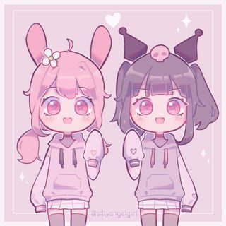
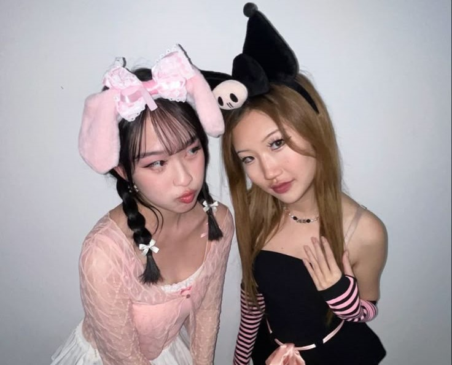
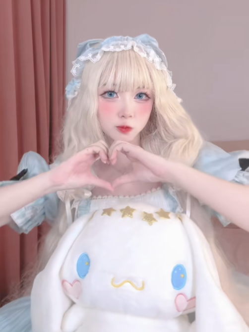
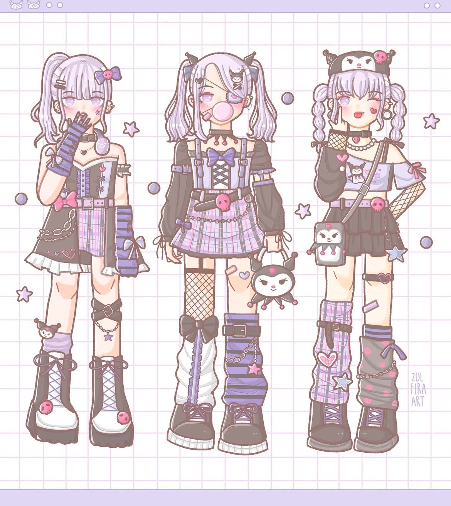

Fan Art Gallery
Explore adorable and unique Sanrio-inspired artwork created by fans worldwide. From digital illustrations to traditional sketches, every piece captures the magic of our favorite Sanrio characters!
DIY Crafts & Projects
- Kawaii Keychains – Make your own resin or polymer clay keychains featuring Hello Kitty, Cinnamoroll, and more.
- Custom Stationery – Design Sanrio-inspired stickers, notebooks, and pens.
- Plushies & Accessories – Sew your own plushies or create cute accessories like bows and charms.
Sanrio-Inspired Outfits & Cosplay
See how fans bring Sanrio magic to life through fashion! From everyday kawaii outfits to full-on cosplay, find style inspiration and creative outfit ideas.
 Community Spotlights
Each month, we highlight a talented fan and their work! Whether it’s a digital artist, a crafter, or a fashion enthusiast, we love celebrating the creativity of our community.
ZUL4RT
This month we would like to give a shout out to Zulfirart! She has an adorable art style! Be sure to check out their content @Zul4art on Instagram!
